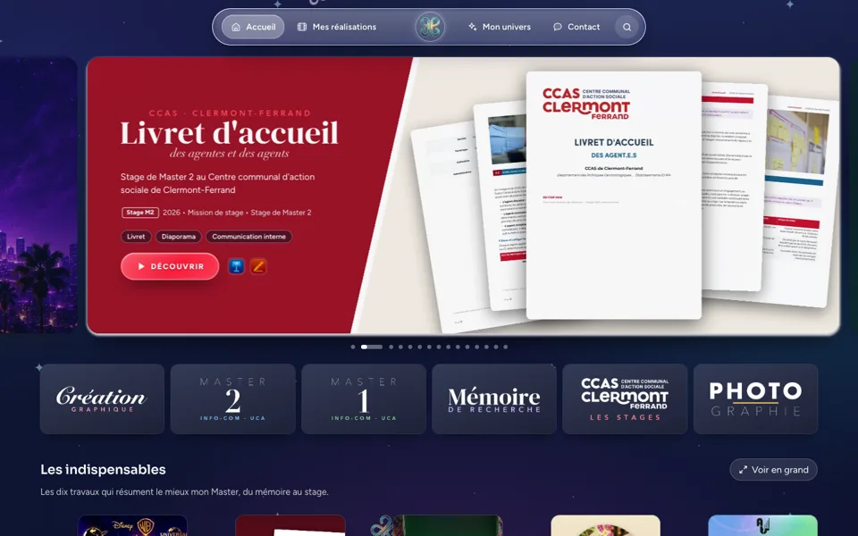
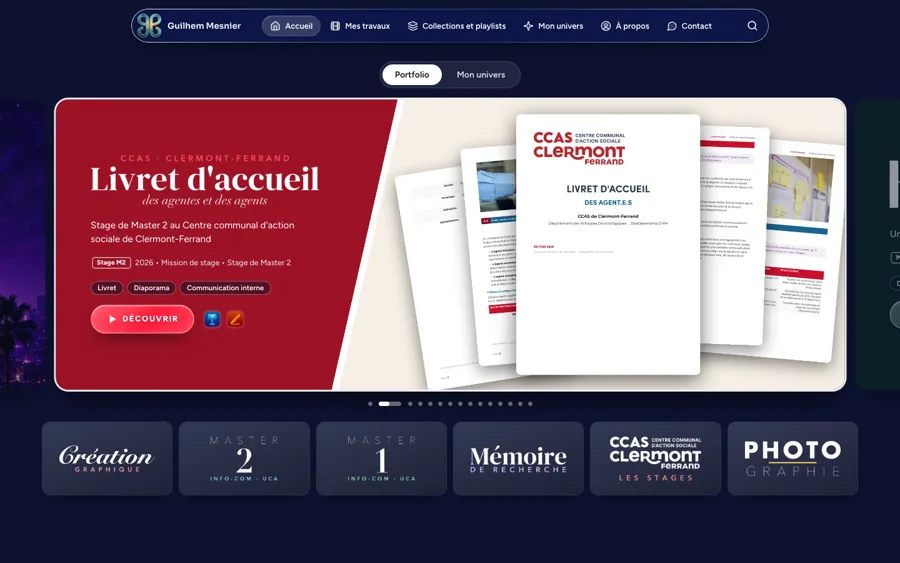
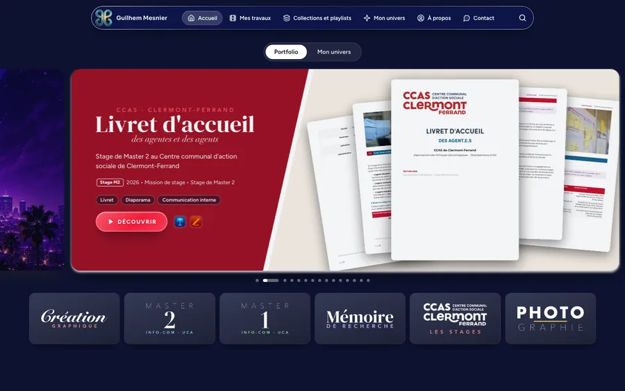
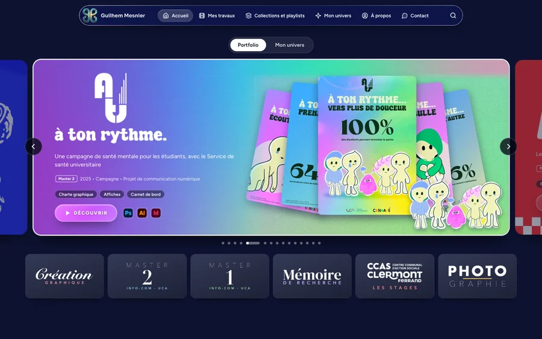
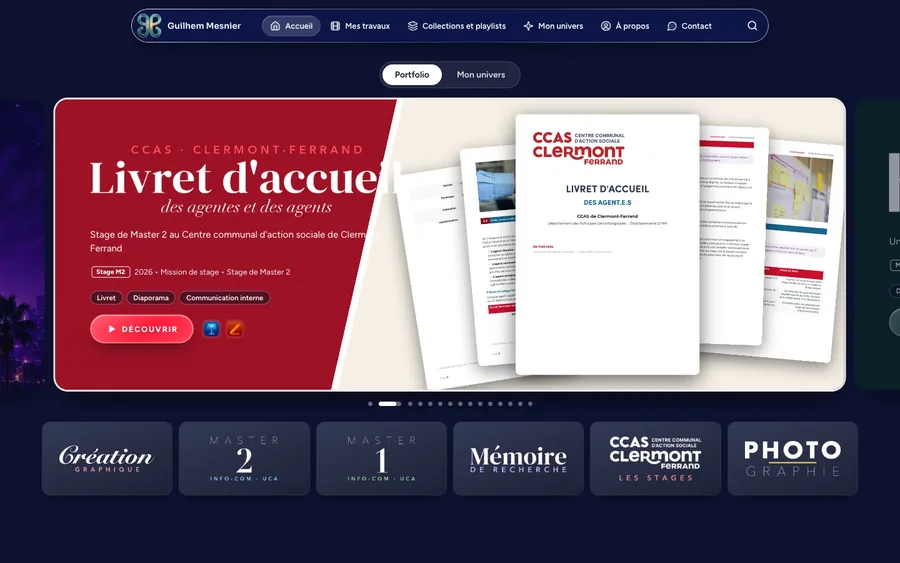
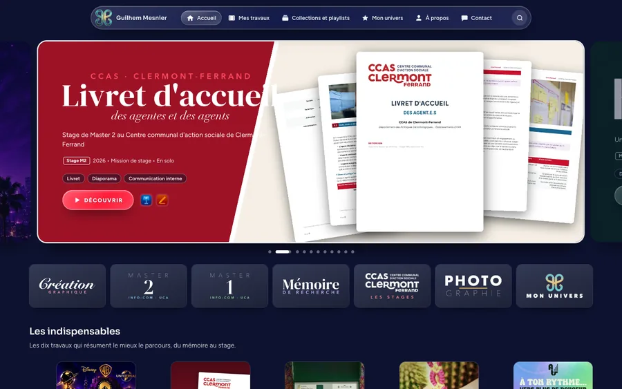

Portfolio de Guilhem Mesnier
Choisissez une version à regarder.
Ouvrir la dernière versionLes barres de navigation
Version 17Barre refaite et Mon univers en tuiles14 novembre 2026Pages de travaux refaites (fond qui change en descendant, une façon magazine), barre refaite avec le papillon au centre, tuiles de Mon univers avec les vraies créations et le logo doré de Majesty Records, carrousel recentré, pastilles et logiciels centrés sur téléphone, passage direct d'une page à l'autre comme en version 15, intro de l’Étrange Festival. Le 14 novembre : texte de la barre toujours blanc ou noir selon le fond, verre arrondi jusqu'au bord, vrais logos Marvel Studios et DC Studios, tuiles de marque en dégradé au survol, une page par catégorie de vidéos avec lecteur intégré et vidéos en fond.
Version 16Trois mondes, fiche d'identité, ailes de papillon13 novembre 2026Barre à trois mondes (Pour vous, Mes réalisations, Mon univers) au liseré argent, qui se cache en descendant ; consigne en fiche d'identité ; transition en ailes de papillon ; fond coloré qui change au défilement ; Kithara plus clair ; images centrées sur téléphone ; studios, avant et après, Étrange Festival, contact animé.Version 15Sites web, collection Création web et page des barres13 novembre 2026Les neuf sites personnels réunis dans une collection et une playlist Création et design web, rangés dans Mon univers ; la page des barres de navigation de toutes les versions ajoutée au site des versions.
Version 14Écrins, lecteur plein écran et toutes les tailles d'écran12 novembre 2026Logos ramenés à leur taille, pastilles sous le logo, ouverture à la hauteur exacte de chaque écran, lecteur qui remplit la fenêtre, plein écran sur chaque rangée.
Version 13Logos plus grands, couleurs vives, carrousel recalé12 novembre 2026Les logos des pages de travaux s'affichent en grand avec de l'air avant les étiquettes, la diapositive À ton rythme reprend à fond les lumières multicolores de ses affiches, le texte du Livret reste dans le rouge et chaque carte du carrousel se cale au centre.
Version 12Infography séparé, plus de diapositives, référencement12 novembre 2026Skye Events devient un travail à part, le carrousel et l'accueil s'enrichissent, le site se lit mieux dans les moteurs de recherche.Version 11Deux mondes, À propos et Contact refaits6 novembre 2026Une barre en verre clair, le portfolio et Mon univers séparés, les pages À propos, Contact et En Vrai refaites, un mur d'affiches pour les collections et les playlists.
Version 10Mobile en affiches et verre liquide6 novembre 2026Sur téléphone, le carrousel passe en grandes affiches et la barre du bas en verre liquide ; l'ordinateur garde son carrousel. Version 9Barre de la V6 et fonds pleine page6 novembre 2026La barre reprend le verre de la V6, se cache au défilement, les fonds couvrent toute la page, slides refaits.
Version 9Barre de la V6 et fonds pleine page6 novembre 2026La barre reprend le verre de la V6, se cache au défilement, les fonds couvrent toute la page, slides refaits. Version 8Barre, collections et parcours6 novembre 2026Barre resserrée, playlists et collections réunies, À propos et Contact refaits, Mon univers retravaillé.
Version 8Barre, collections et parcours6 novembre 2026Barre resserrée, playlists et collections réunies, À propos et Contact refaits, Mon univers retravaillé. Version 7Un seul lecteur de diaporamas6 novembre 2026Diaporamas aux couleurs de chaque travail, fenêtre d'agrandissement, textes lisibles en clair et en sombre.
Version 7Un seul lecteur de diaporamas6 novembre 2026Diaporamas aux couleurs de chaque travail, fenêtre d'agrandissement, textes lisibles en clair et en sombre. Version 6Fonds en images et pages sans trous6 novembre 2026De vraies images floutées derrière chaque travail, des pages de même largeur.
Version 6Fonds en images et pages sans trous6 novembre 2026De vraies images floutées derrière chaque travail, des pages de même largeur. Version 5Papillons et ciel étoilé6 novembre 2026Papillons qui volent, ciel de nuit, pages habillées par univers.
Version 5Papillons et ciel étoilé6 novembre 2026Papillons qui volent, ciel de nuit, pages habillées par univers. Version 4Pages habillées et playlists5 novembre 2026Chaque travail dans sa charte, playlists en affiches.
Version 4Pages habillées et playlists5 novembre 2026Chaque travail dans sa charte, playlists en affiches. Version 3Accueil façon Disney+5 novembre 2026Le carrousel et les rangées d'affiches.
Version 3Accueil façon Disney+5 novembre 2026Le carrousel et les rangées d'affiches. Version 2Page unique31 octobre 2026Tout le portfolio sur une seule page.
Version 2Page unique31 octobre 2026Tout le portfolio sur une seule page. Version 1Six directions artistiques30 octobre 2026Les premiers essais : cinéma, éditorial, suisse, bento, univers.
Version 1Six directions artistiques30 octobre 2026Les premiers essais : cinéma, éditorial, suisse, bento, univers.